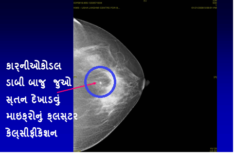
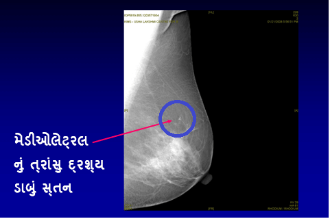

એક મેમોગ્રામ એ શું છે?
એક મેમોગ્રામ (સ્તનનો એક્સ-રે) એવી વ્યક્તિ માટે કરવામાં આવે છે જેણે સ્તનમાં એક ગાંઠ / સ્તનમાં થયેલા તાજાં ફેરફારને ધ્યાનમાં લીધેલ હોય. એક નિષ્ણાત દ્વારા દવાખાનામાં પરીક્ષણ, મેમોગ્રામ અને સ્તનના અલ્ટ્રાસાઉન્ડના સંયોજનથી એ સ્તનમાં રહેલી સમસ્યાને શોધી કાઢવા / નકારવા માટે મદદ મળી રહેશે.
ડૉક્ટર.. હું એક ગાંઠનો અનુભવ કરી શકતો/શકતી નથી. મારે શા માટે એક મેમોગ્રામ કરાવવો જોઈએ?
એક સ્ક્રીનિંગ મેમોગ્રામ એ શું છે?
એક મેમોગ્રામ (સ્તનનો એક્સ-રે) સ્તનના કેન્સરને તેના અતિસુક્ષ્મ તબક્કા પર શોધી કાઢવા માટે એવી સ્થિતિમાં કરવામાં આવે છે જ્યારે ના તો એ સ્ત્રી કે ના એ ડૉક્ટર સ્તનમાં એક ગાંઠનો અનુભવ કરી શકતા નથી. 40 વર્ષની ઉંમરથી દર વર્ષે સ્ક્રીનિંગ મેમોગ્રામ કરાવવો એ સલાહ ભરેલું પગલું છે.
સ્તનનું કેન્સર ખરેખર દ્રશ્યમાન થાય તેના ઘણાં વર્ષો પહેલાં તેને શોધી કાઢવા માટે એક મેમોગ્રામ (સ્તનનો એક્સ-રે) એ સાબિત થયેલ અસરકારક માર્ગ છે. કેન્સરને વહેલું શોધી કાઢવાને લીધે સફળ સારવારની શ્રેષ્ઠ તકો મળી રહે છે, જેના પરિણામે જીવંત રહેવાની શક્યતામાં નોંધપાત્ર રીતે વધારો થાય છે.




શું સ્તનનું પરીક્ષણ એ બધાં જ વય જૂથો માટે અસરકારક છે?
દરેક વયની સ્ત્રીઓ એ “સ્તન અંગે જાગૃત” રહેવું એ મહત્વનું છે ત્યારે, સ્તનનું પરીક્ષણ એ માત્ર 40 વર્ષથી મોટી ઉંમરની સ્ત્રીઓમાં જ અસરકારક સાબિત થાય છે. 40 વર્ષથી ઓછી ઉંમરની સ્ત્રીઓમાં સ્તનનું નિયમીત પરીક્ષણ અને એ પણ કોઈપણ જાતના લક્ષણો દેખાયા વિના હજુ સુધી અસરકારક સાબિત થયું નથી.
શું એક મેમોગ્રામ કરાવવો એ સુરક્ષિત છે? શું તેનાથી રેડિયેશનનું જોખમ થાય છે?
એક મેમોગ્રામ કરાવવો એ ખરેખર સુરક્ષિત છે. મેમોગ્રામ સાથે રેડિયેશનનો એક સાવ નાનો ડોઝ સંકળાયેલ છે – તેના દ્વારા સ્વાસ્થ્યને જોખમ નગણ્ય છે. મેમોગ્રાફી દરમિયાન આપવામાં આવેલ રેડિયેશનનો ડોઝ એ એક દાંતનો એક્સ-રે લેતી વખતે આપવામાં આવતા ડોઝ જેટલો જ હોય છે. .
શું મેમોગ્રાફી પીડા દાયક છે?
મેમોગ્રાફીને લીધે ક્ષણિક બેચેની થતી હોવા છતાં, જો તેને એક યોગ્ય રીતે તાલીમ પામેલ રેડિયોગ્રાફર દ્વારા કરવામાં આવે તો તે પીડા દાયક ના થવું જોઈએ. ડિજીટલ મેમોગ્રાફીની સાથે, એ બેચેની વળી સાવ ઓછી થાય છે.
એક પરંપરાગત મેમોગ્રામ અને એક ડિજીટલ મેમોગ્રામ વચ્ચે શું તફાવત છે?
ફુલ ફિલ્ડ ડિજીટલ મેમોગ્રાફી એ એક ક્રાતિકારી રીતે વિકસીત થયેલ (પ્રક્રિયા) છે જેમાં પાંચ સેકન્ડમાં એ સ્તનની એક છબીને બનાવી શકાય છે (મેમોગ્રાફીના પરંપરાગત પરીક્ષણ માટેના મશીનમાં ચાર થી પાંચ મિનિટ લાગે છે). આ નવી તકનીક એ ધોરણસરની મેમોગ્રાફી કરતાં વધુ અસરકારક છે જે સ્તનના કેન્સર અંગેના સુક્ષ્મ ફેરફારોને દર્શાવે છે અને તે ખાસ કરીને ઘટ્ટ સ્તન સાથેની યુવાન સ્ત્રીઓમાં વધુ ઉપયોગી છે. અન્ય ફાયદાઓમાં સાવ ઓછી બેચેની આપનાર અને પરંપરાગત મેમોગ્રામની સરખામણીમાં રેડિયેશનનો સાવ નગણ્ય પ્રભાવ પાડે છે અને ઉપર દર્શાવ્યા પ્રમાણે વધુ સારી ચોક્કસાઇ પૂરી પાડે છે.
વધુમાં, ટેલીમેડિશીનની સુવિધા ઉપલબ્ધ થવાની સાથે, એક બીજું મંતવ્ય મેળવવા માટે એ ડિજીટલ ચિત્રોને વિશ્વમાં કોઈપણ સ્થળ પર મોકલી શકાય છે. એ મશીન ઘણું ખર્ચાળ હોવાને લીધે, ભારતમાં એ ફુલ ફિલ્ડ ડિજીટલ મેમોગ્રાફી બહોળા પ્રમાણમાં ઉપલબ્ધ નથી.
શું સ્તનના કેન્સરને શોધી કાઢવામાં મેમોગ્રાફી 100% ચોક્કસાઇ ભરેલ છે?
સ્તનના કેન્સરને વહેલું શોધી કાઢવા માટે મેમોગ્રામ્સ એ સૌથી વધુ અસરકારક માર્ગ છે. પરીક્ષણ માટેની અન્ય ચકાસણીઓ પ્રમાણે, તેઓ સંપૂર્ણ નથી. મેમોગ્રાફીનો ચોક્કસાઇનો દર આશરે 85% જેટલો છે. તેના કારણો આ પ્રમાણે છે:
સ્તન માટેના MRIની ભૂમિકા શું છે?
નિયમીત પણે થતાં સ્તનના પરીક્ષણ માટે અથવા સ્તનના કેન્સરના દરેક દર્દીની ચકાસણી માટે સ્તનના MRIની ભલામણ કરવામાં આવતી નથી
જો કે તે, અમુક ખાસ ચોક્કસ સંજોગોમાં તીવ્ર રીતે ઉપયોગી થાય છે: